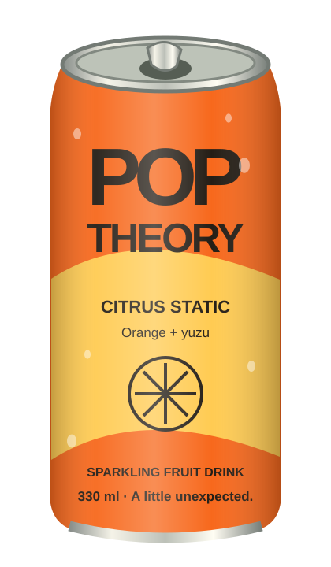

Visual identity / Concept study
A LITTLE
UNEXPECTED.
The palette
Orange
#f7681c
#f7681c
Paper
#fff4da
#fff4da
Ink
#292219
#292219
Lime
#dce997
#dce997
The type
Impact / Arial Narrow for loud, tight headlines.
Arial / Helvetica for clear, familiar reading.

Citrus Static
Orange + yuzu. Bright, zippy, off-script.
The treatment
Original SVG cans. Silver rims, restrained material shading, bold labels, and citrus cross-sections. Flat color fields make room for the product.
Motion follows the story: introduce, collide, settle. Reduced motion retains a complete still composition.